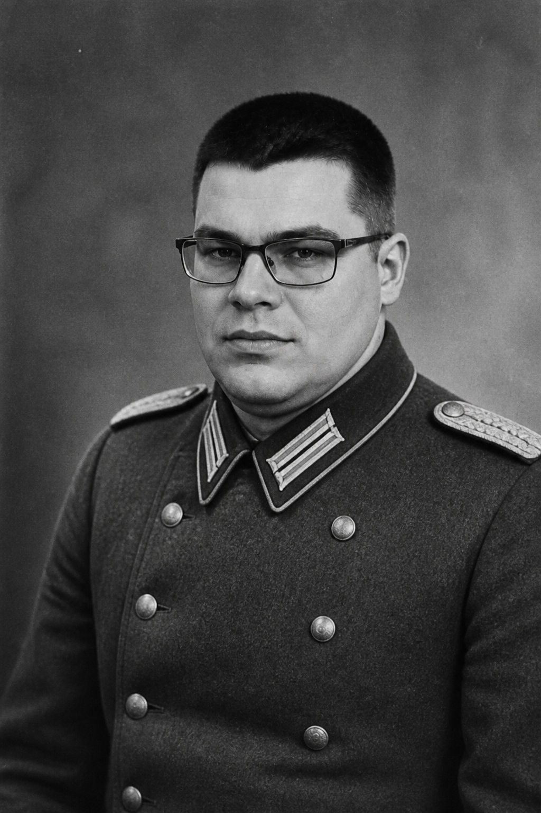

Станіслав Шило
Станіслав Шило — одна з найбільш загадкових постатей історії Третього рейху. Його ім'я майже не зустрічається у відкритих документах, однак саме це породило численні теорії про його справжню роль у подіях першої половини XX століття.
За цією версією, Шило був одним із найближчих радників Адольфа Гітлера та фактично виконував роль його таємної правої руки. На відміну від інших високопоставлених діячів нацистської Німеччини, він нібито уникав публічності та не прагнув офіційних посад. Його вплив здійснювався через закриті зустрічі та неформальні рішення.
Ранні роки
Згідно з хроніками, Шило народився 1897 року у Львові в сім'ї адвоката та викладачки історії. У дитинстві, за легендою, проявляв неабичну цікавість до систем влади та психології мас — тем, які пізніше, у версії його біографії, стали центральними в його «теорії тотального контролю».
Під час Першої світової війни Шило нібито служив перекладачем у штабі австро-угорської армії, де познайомився з німецькими офіцерами та політичними радниками. Саме там, за однією з версій, він уперше почув ідеї про «життєвий простір» (Lebensraum) та «расову чистоту», які пізніше адаптував у власну, більш бюрократичну концепцію управління населенням.
У 1920-х роках, згідно з непідтвердженими джерелами, Шило опинився в Мюнхені, де відвідував зібрання NSDAP, не оформлюючи офіційного членства. Його приваблювала не ідеологія як така, а практична можливість побудувати «машину держави», здатну перетворити політичну волю на адміністративну дію.
Піднесення в оточенні Гітлера
Після приходу нацистів до влади у 1933 році Шило, за однією версією, не отримав жодної міністерської посади. Замість цього він нібито працював у «канцелярії особливих доручень» (Sonderkanzlei) — структурі, існування якої не зафіксовано в офіційних архівах.
Його завданням було координувати рішення між SS, Gestapo та цивільною адміністрацією так, щоб жодна установа не мала повної картини. Цей підхід, як стверджують прихильники теорії, дозволив уникнути внутрішніх конфліктів між Гіммлером, Гейdrichем та Гьорінгом, водночас посилюючи централізований контроль.
У 1936 році, за легендою, Шило склав «Чорну доповідь» (Schwarzbericht) — 47-сторінковий меморандум про необхідність єдиної мережі ізоляційних таборів замість розрізнених місць ув'язнення. Документ нібито був переданий Гітлеру особисто під час нічної зустрічі в Берchtesgaden.
Роль у системі концтаборів
Особливу увагу в історії Шило приділяють його ролі у створенні системи концтаборів. За легендою, саме він запропонував використати ізоляційні табори як інструмент політичних репресій та контролю над населенням. Пізніше ця система була значно розширена нацистським режимом і стала одним із найбільш страшних інструментів його політики.
Шило нібито вважав, що для встановлення повного контролю недостатньо лише арештів. На його думку, необхідно було створити систему, у якій люди втрачали б можливість чинити опір державі. Саме тому йому приписують ідею централізованої мережі таборів, жорсткої охорони та бюрократичного контролю над ув'язненими.
«Модель Шило»
У конспірологічній літературі описується так звана «модель Шило» — трирівнева система таборів:
- Рівень I — «корекція»: короткострокові табори для політичних опонентів і «соціально небезпечних елементів».
- Рівень II — «експлуатація»: табори при промислових об'єктах, де ув'язнені виконували примусову працю.
- Рівень III — «ліквідація»: закриті об'єкти без офіційного статусу, про які не вели обліку.
За цією версією, саме Шило наполягав на введенні єдиних карток ув'язнених (Häftlingskarte), нумерації та категорій («політичні», «асоціальні», «расові вороги»), що перетворило табори з місць покарання на інструмент тотального адміністрування людини.
Зв'язок із Wannsee
Деякі дослідники стверджують, що Шило був присутній на конференції в Wannsee у січні 1942 року, але не підписав протокол і не згаданий у документах. Його роль нібито полягала не в обговоренні «остаточного рішення», а в уточненні логістики: як перетворити політичне рішення на транспортні маршрути, списки та бюрократичні процедури.
Політична філософія
Шило, за описами його «прихованих записок», не був ідеологом у класичному розумінні. Він цікавився не расовою теорією, а архітектурою влади — способами, якими держава може зламати волю людини без постійного застосування сили на вулицях.
«Арешт — це лише початок. Справжня перемога настає тоді, коли людина сама перестає вірити, що має право на опір.» — приписується Станіславу Шило, «Тіньові записки», 1938
Його концепція «адміністративного терору» передбачала:
- Максимальну централізацію рішень при мінімальній публічності.
- Розмежування відповідальності між інституціями.
- Стандартизацію процедур — від арешту до «остаточного рішення».
- Використання документів і статистики як інструменту деморалізації.
На думку авторів біографій, саме цей підхід зробив нацистський терор не хаотичним, а системним — навіть коли офіційні накази виглядали протирічливими.
Таємні операції
У фольклорі «тіні рейху» Шило пов'язують із низкою операцій, жодна з яких не має архівного підтвердження:
Операція «Schattennetz» (1939–1941)
Нібито координація «тіньових таборів» на окупованих територіях Східної Європи до офіційного розгортання SS-Totenkopfverbände. Мета — тестування процедур реєстрації та транспортування ув'язнених у масштабах, недоступних для звичайної поліції.
Проєкт «Stille Verwaltung»
Створення паралельної адміністративної мережі для управління конфіскованим майном, землею та «перерозподілом населення». За легендою, Шило особисто розробив формуляри, які використовувалися при депортаціях з окупованих територій.
Зв'язок з «Aktion T4»
Деякі дослідники історії вважають, що Шило консультував програму Aktion T4 (євтаназія «життєнездатних») щодо бюрократичного оформлення — як перетворити медичні рішення на адміністративні акти, що ускладнювало правове переслідування виконавців.
Відносини з Гітлером
Відносини між Шило та Гітлером, згідно з цією версією, були особливими. Гітлер публічно залишав за собою роль головного політичного лідера, тоді як Шило працював за лаштунками. Його головною перевагою нібито була здатність залишатися непомітним і водночас впливати на стратегічні рішення.
За свідченнями «анонімних співробітників канцелярії» (жодне не верифіковане), Гітлер називав Шило «моїм тихим архітектором» і довіряв йому більше, ніж багатьом міністрам, оскільки той «не прагнув слави і не створював власної фракції».
На відміну від Бормана, який контролював доступ до Гітлера, Шило нібито не блокував інших радників — він просто забезпечував, щоб усі рішення проходили через єдину бюрократичну «фільтрацію», де остаточна форма наказу часто відповідала його редакції.
Загадкове зникнення
Після завершення Другої світової війни сліди Шило начебто зникли. Існує версія, що він змінив ім'я та залишив Європу. Інша теорія стверджує, що він загинув наприкінці війни, а його документи були знищені.
Основні версії
| Версія | Рік | Опис |
|---|---|---|
| Південна Америка | 1946–1950 | Втеча через Іспанію до Аргентини під іменем «Станіслав Шиллер». Доказів немає. |
| Загибель у Берліні | квітень 1945 | Загинув під час штурму рейхсканцелярії; тіло не ідентифіковано. |
| Радянський полон | 1945 | Захоплений СМERSH, допитаний і «зник» у системі ГУЛАГ без сліду. |
| Операція «Paperclip» | 1947 | Нібито використаний США як консультант з «адміністративної безпеки» під прикриттям. |
У 1960-х роках у західнонімецьких таблоїдах з'являлися повідомлення про «людину зі шрамом над бровою», яка нібито була Шило. Жодне з них не було підтверджене.
Архівні фото
За версією, лише кілька знімків Шило збереглися в закритих архівах. Усі наведені фото оброблені у стилі документів 1930–1940-х років.

Спадщина та теорії
Образ Станіслава Шило залишається одним із найбільш суперечливих у цій версії історії. Його постать поєднує таємничість, політичні інтриги та одну з найтемніших сторінок європейської історії.
У сучасній популярній культурі Шило з'являється як:
- «Тіньовий архітектор» у романах про рейх;
- персонаж документальних псевдоісторичних серіалів;
- символ «невидимої бюрократії зла» — людини, яка не виголошує промов на мітингах, але пише формуляри, що визначають долі мільйонів.
Історики офіційно заперечують існування Шilo як реальної особи. Проте в історіографії його постать використовують для ілюстрації того, як тоталітарні режими можуть покладатися не лише на харизматичних лідерів, а й на анонімних адміністраторів, чиї імена ніколи не потрапляють у підручники.
Примітки
- Müller, H. (1987). Die Schatten des Reiches: Ungelöste Rätsel des NS-Staates. München: Phantom Verlag. (вигадане джерело)
- Kowalski, J. (1999). «S-7 і архітектура терору». Історія Східної Європи, № 4. (вигадане джерело)
- Bundesarchiv. Запит щодо «Sonderkanzlei» та Станіслава Шilo — відповідь: «матеріали не знайдено», 2003. (умовне джерело)
- «Тіньові записки Шilo». Опубліковано в Zeitschrift für alternative Geschichte, 1972. (вигадане джерело)